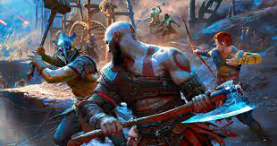
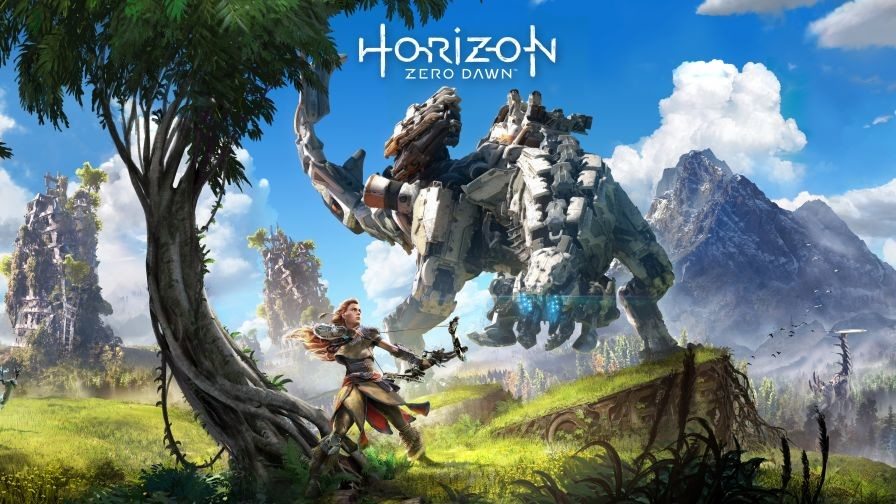
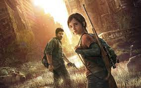
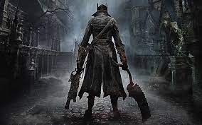
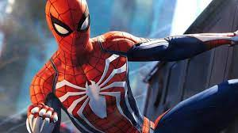

los mejores juegos de play station son los siguientes:
1: god of war

God of War (Dios de la Guerra) es un videojuego de acción y aventuras desarrollado por SCEA (Santa monica Studio)
y distribuido por Sony Computer Entertainment el 22 de Marzo del 2005 para la consola Playstation 2. Es el primer juego en estrenarse y el tercero
en términos cronológicos internos de la saga.
2: horizon

Horizon Zero Dawn es un videojuego de acción, aventura y de mundo abierto desarrollado por Guerrilla Games y
distribuido por Sony Interactive Entertainment para PlayStation 4 y Microsoft Windows. Es la primera propiedad intelectual de Guerrilla Games
desde la serie Killzone en 2004 y se anunció por primera vez en el E3 2015.
3: the last of us

The Last of Us es un videojuego de terror, acción y aventura desarrollado por la compañía estadounidense
Naughty Dog y distribuido por Sony Computer Entertainment para la consola PlayStation 3 en 2013. La trama describe las vivencias de Joel y Ellie,
un par de supervivientes de una pandemia en Estados Unidos que provoca la mutación de los seres humanos en criaturas caníbales.
4: blood borne

Bloodborne nos lleva a la decrépita ciudad de Yharnam, cuyos habitantes han sido infectados por una misteriosa
enfermedad sanguínea. Nosotros encarnamos al 'Cazador', un personaje que tendrá que buscar una misteriosa sustancia llamada Sangre pálida mientras
resuelve misterios y se enfrenta a todo tipo de criaturas.
5: spider-man

Spider-Man para PS4 es un videojuego de acción y aventuras con un estilo jugable de mundo abierto, que permite
al jugador desplazarse de un lugar a otro con total libertad de movimientos y que tiene por escenario donde de desarrolla la historia, la ciudad
de Nueva York.